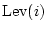
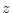

Paul Crowley 1 - Stefan Lucks 2
LEVIATHAN [5] is a stream cipher proposed by David McGrew and Scott Fluhrer for the NESSIE project [6]. Like most stream ciphers, it maps a key onto a pseudorandom keystream that can be XORed with the plaintext to generate the ciphertext. But it is unusual in that the keystream need not be generated in strict order from byte 0 onwards; arbitrary ranges of the keystream may be generated efficiently without the cost of generating and discarding all prior values. In other words, the keystream is ``seekable''. This property allows data from any part of a large encrypted file to be retrieved efficiently, without decrypting the whole file prior to the desired point; it is also useful for applications such as IPsec [2]. Other stream ciphers with this property include block ciphers in CTR mode [3]. LEVIATHAN draws ideas from the stream ciphers WAKE [9] and SEAL [7], and the GGM pseudo-random function (PRF) construction [1].
The keystream is bounded at bytes. Though the security
goals are stated in terms of key recovery, it is desirable that distinguishing
this keystream from a random binary string should be as computationally
expensive as an exhaustive search of the 128 or 256-bit keyspace.
Keystream generation is best modelled as a key-dependent function
, mapping a location
in the stream to a 32-bit output word; catenating consecutive values
of this function from 0 gives the entire keystream:
Finding
 for arbitrary  is not especially
fast. However, once this is done, intermediate values can usually
be reused to find
much more efficiently. This is because the internal structure of the
cipher is based on a forest of binary trees, each of
which generates words of output, as shown in Figure
1.
is not especially
fast. However, once this is done, intermediate values can usually
be reused to find
much more efficiently. This is because the internal structure of the
cipher is based on a forest of binary trees, each of
which generates words of output, as shown in Figure
1.
|
The notation we use to specify this function precisely is somewhat
different from that given in [5], but is convenient
for our purposes; we treat  as a parameter, rather than as
a word of state. The cipher is parameterised on  and
and  ,
where
,
where  is divisible by 4 and ; LEVIATHAN sets
and .
is divisible by 4 and ; LEVIATHAN sets
and .  denotes catenation of bit
strings, bitwise complementation of ,
the XOR operation (addition in or
as appropriate), and addition in the group
, treating the first bit of the bitstring as the most
significant and padding bitstrings shorter than
denotes catenation of bit
strings, bitwise complementation of ,
the XOR operation (addition in or
as appropriate), and addition in the group
, treating the first bit of the bitstring as the most
significant and padding bitstrings shorter than  bits with
zeroes on the left. We specify the forest structure illustrated in
Figure 1 recursively:
bits with
zeroes on the left. We specify the forest structure illustrated in
Figure 1 recursively:

The internal state that functions , , and
operate on (and the functions  , , used to
define them) is a 2-tuple of bitstrings
, , used to
define them) is a 2-tuple of bitstrings  ; we treat this
as distinct from the catenated bitstring . The functions
; we treat this
as distinct from the catenated bitstring . The functions
 , , and
, , and  operate on bytes within a word:
operate on bytes within a word:  and are rotates, while
and are rotates, while  provides nonlinearity with
the key-dependent permutations which map
onto itself. These permutations are generated by the key schedule,
which we omit. Note that and operate on each word
of the tuple independently; mixing is provided by
provides nonlinearity with
the key-dependent permutations which map
onto itself. These permutations are generated by the key schedule,
which we omit. Note that and operate on each word
of the tuple independently; mixing is provided by  .
.
[5] gives a functionally different definition of  (
); the one given here is that intended
by the authors [4] and used to generate the test vectors,
though the difference is not relevant for our analysis.
(
); the one given here is that intended
by the authors [4] and used to generate the test vectors,
though the difference is not relevant for our analysis.
We present two biases in the LEVIATHAN keystream that distinguish it from a random bit string. We know of no other attacks against LEVIATHAN more efficient than brute force.
Both attacks focus on consecutive pairs of outputs generated by . Clearly, LevPair generates the same -byte keystream as Lev, so a distinguisher for one is a distinguisher for the other. Such pairs are interesting because they are the most closely related outputs in the tree structure; [5] refers to attacks using such pairs as ``up-and-down attacks''. We can expand the formula for LevPair as follows:
From this we define functions LevAbove which generates the last common ancestor of such an output pair as illustrated in Figure 2, and PairCom which generates the output pair from the ancestor:
This structure gives us our first distinguisher. Though PairCom has the same domain as range, it is not in general bijective; it can be modelled more accurately as a random function. Thus a collision can occur in LevPair, given two distinct inputs, if there is a collision either in LevAbove or in PairCom, and if we model both as random functions the probability of an output collision for two random distinct inputs to LevPair is thus approximately , twice what it should be if the keystream were a random binary string.
For , this increased probability of collisions between
output word pairs can be observed with a birthday attack after around
output pairs ( bytes) have been generated;
the techniques of [8] may be used to reduce
the memory demands of this attack, though this slows the attack by
a factor of approximately where
bytes) have been generated;
the techniques of [8] may be used to reduce
the memory demands of this attack, though this slows the attack by
a factor of approximately where  is the
height of the tree, since probes can no longer take advantage of the
higher efficiency of sampling consecutive values of LevPair.
is the
height of the tree, since probes can no longer take advantage of the
higher efficiency of sampling consecutive values of LevPair.
The definitions of the and functions are very similar;
is the same as except that it treats its inputs
in the opposite order, and inverts one of them. If did not
apply bitwise inversion to its first input (call this function ),
then the two functions would be related by
(with Swap having the obvious definition
);
this would mean in turn that
for any  , and thus that
, with
the result, as we shall see, that repeating pairs were visible in
the output roughly twice as often as they should be. The inversion
on the first input of breaks this symmetry; however, it turns
out that it does not prevent a related attack.
, and thus that
, with
the result, as we shall see, that repeating pairs were visible in
the output roughly twice as often as they should be. The inversion
on the first input of breaks this symmetry; however, it turns
out that it does not prevent a related attack.
Computation of PairCom requires 32 S-box lookups, but for each computation
of the  function the same 8-bit index, drawn from the least
significant byte, is fed to each of the four S-boxes. Changes to the
other bytes carry directly into the output of
function the same 8-bit index, drawn from the least
significant byte, is fed to each of the four S-boxes. Changes to the
other bytes carry directly into the output of  , without nonlinearity
or mixing; in other words, where
,
we find
. We call this
least significant byte the index to the S-box. If
, without nonlinearity
or mixing; in other words, where
,
we find
. We call this
least significant byte the index to the S-box. If  is the input to PairCom, only bytes of
are indices to S-boxes in , and only bytes
are indices in ; by inverting only these two bytes in our
pair , we can avoid the symmetry-breaking effect of the
inversion as far as the nonlinear components are concerned, which
results in the same four S-box indices being used in both the
and branches of PairCom.
is the input to PairCom, only bytes of
are indices to S-boxes in , and only bytes
are indices in ; by inverting only these two bytes in our
pair , we can avoid the symmetry-breaking effect of the
inversion as far as the nonlinear components are concerned, which
results in the same four S-box indices being used in both the
and branches of PairCom.
|
Figure 3 illustrates this attack. For an arbitrary
 -bit string
-bit string
 , we define symbols
for intermediate values in :
, we define symbols
for intermediate values in :
With these definitions, we find that :
From this it is clear that for any input of the appropriate form, one output word is the inverse of the other; or in other words, if we now XOR the two word outputs from PairCom together (which, conveniently, is the same as applying the LEVIATHAN compression function a second time), we find
Since we model LevAbove as a random function we conclude that inputs
to PairCom have probability of matching this form in
the normal calculation of LevPair. Where inputs do not match this
form, we assume that PairCom behaves as a random function and therefore
that for random  not matching this form,
;
this assumption is borne out by experiment. From this we conclude
that LevPair is twice as likely as a random function to produce an
output such that
not matching this form,
;
this assumption is borne out by experiment. From this we conclude
that LevPair is twice as likely as a random function to produce an
output such that
For , a test for the presence of this bias should therefore
take on the order of samples of LevPair, ie  bytes, as for the previous attack.
bytes, as for the previous attack.
We looked for these biases on a reduced version of LEVIATHAN with .
For the PRF-PRF attack, we ran over 256 distinct keys generating 32-bit LevPair outputs for each, and sorting them to find collisions. We count as a collision each instance where a distinct pair of inputs result in the same output; thus, where outputs have the same value, we count this as distinct collisions. For a random function we would expect to find approximately3 collisions in total across all keys, while the PRF-PRF attack would predict an expected . The experiment found 2350336 collisions; this is standard deviations (SDs) from the expected value in the random function model, and SDs from the expected value in the model provided by the PRF-PRF attack. This shows that this model identifies a substantial bias in the cipher, but there is a further bias in the collision probability of roughly 0.38% yet to be accounted for.
For the S-box matching attack, we generated LevPair outputs for each of 256 keys, counting outputs with the property. A random function would generate an expected such outputs, while the S-box matching attack predicts that LevPair will generate an expected such outputs. The experiment found such outputs; this is SDs from the expected value in the random function model, and SDs from the expected value in the model provided by the S-box matching attack. Again, this shows that while a substantial source of bias has been identified, there is still a bias of 3.66% yet to be accounted for. Scott Fluhrer has reported finding this attack effective in experiments against the full LEVIATHAN with .
We have shown two forms of bias in the output of the LEVIATHAN keystream
generator, either of which distinguish it from a random function with
 known bytes of output; we have not as yet found a way
to recover key material using these distinguishers. These distinguishers
can both be applied to the same portion of keystream for greater statistical
significance. Both make use of compression in the PairCom function.
known bytes of output; we have not as yet found a way
to recover key material using these distinguishers. These distinguishers
can both be applied to the same portion of keystream for greater statistical
significance. Both make use of compression in the PairCom function.
Despite these attacks, LEVIATHAN demonstrates that a tree-based cipher could offer many advantages. It is to be hoped that similar designs, offering the same speed and flexibility but resistant to this and other attacks, will be forthcoming.
Thanks to Rüdiger Weis for helpful commentary and suggestions, and to the LEVIATHAN authors for providing an implementation of the first experiment and for useful discussion.
URL for this paper: http://www.ciphergoth.org/crypto/leviathan